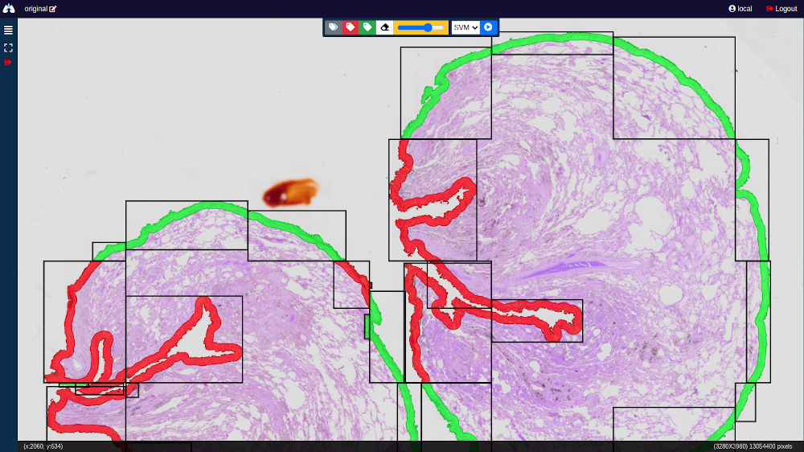

|
RadPleura: A Radiomics-Based Framework for Lung Pleura Classification in Histology Images from Interstitial Lung Diseases
Oscar Cuadros Linares1, Ivar Vargas Belizario, Sabrina Setembre Batah, Bernd Hamann,

You can cite our paper using the bibtex reference below:
@INPROCEEDINGS{ocuadros2024RadPleura,
author={Linares, Oscar Cuadros and Belizario, Ivar Vargas and Batah, Sabrina Setembre and Hamann, Bernd and Fabro, Alexandre Todorovic and Azevedo-Marques, Paulo M. and Traina, Agma J. M.},
booktitle={2024 IEEE International Symposium on Biomedical Imaging (ISBI)},
title={RadPleura: A Radiomics-Based Framework for Lung Pleura Classification in Histology Images from Interstitial Lung Diseases},
year={2024},
volume={},
number={},
pages={1-5},
keywords={Support vector machines;Training;Image segmentation;Histopathology;Pulmonary diseases;Lung;Feature extraction;Interstitial lung disease;Lung pleura;Histopathology;Radiomics;Machine learning},
doi={10.1109/ISBI56570.2024.10635328}
}
|